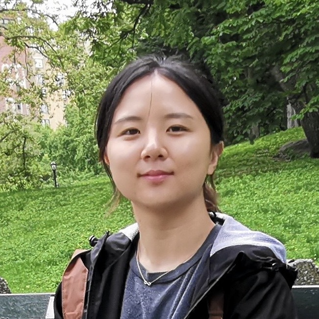
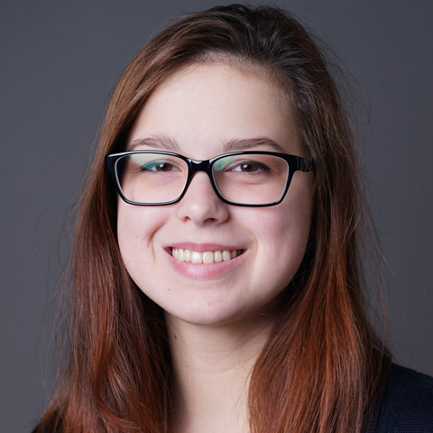

Our research is motivated by real-world problems in interdisciplinary studies such as social science, health informatics, and recommender systems. We endeavor to design transparent machine learning and data analytical techniques to better discover dynamic and interpretable patterns from large-scale data.
How to join our lab: Please check out openings.Current PhD students


Xiaoxue Han
Computer Science
2021 - present
Xiaoxue Han
Computer Science
2021 - present

Jing Chen
Data Science
2021 - present

Adam Sadej
Data Science
2022 -
Current Master/Undergraduate students
Patrick Sammon
CS Master, Stevens
2021 - 2022
Alumni

Weronika Zamlynny
CS BS, Stevens 2019
Now: Microsoft
Weronika Zamlynny
CS BS, Stevens 2019
Now: Microsoft
Ameya Vaidya
Bridgewater-Raritan High School
Summer intern 2019
Now: Princeton University
Kun Wu
CS Master, Stevens 2019 - 2021
Now: PhD at Stevens